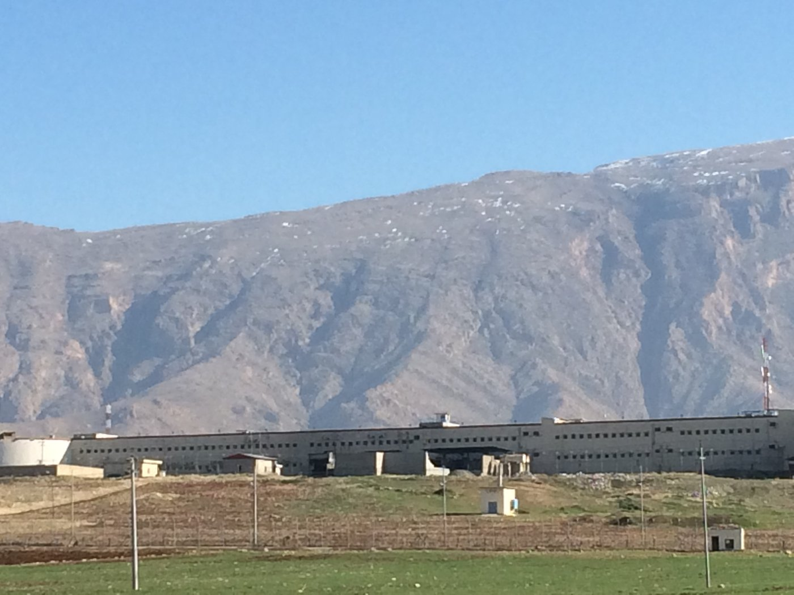
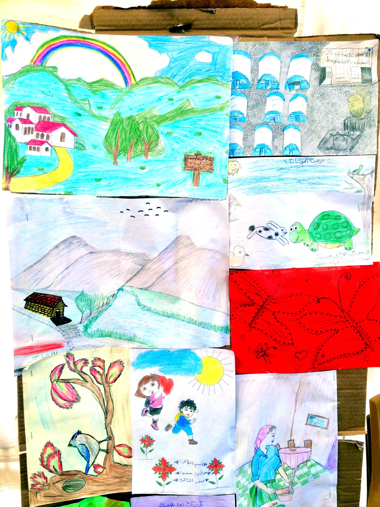
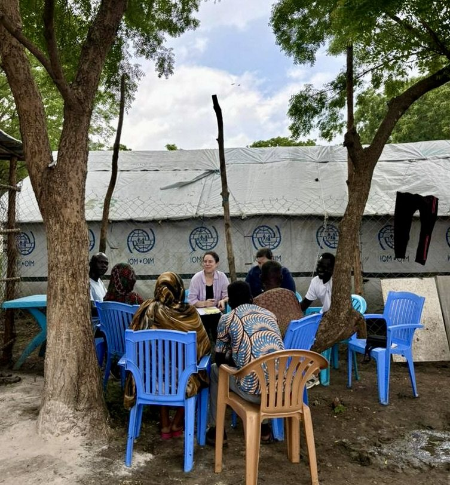
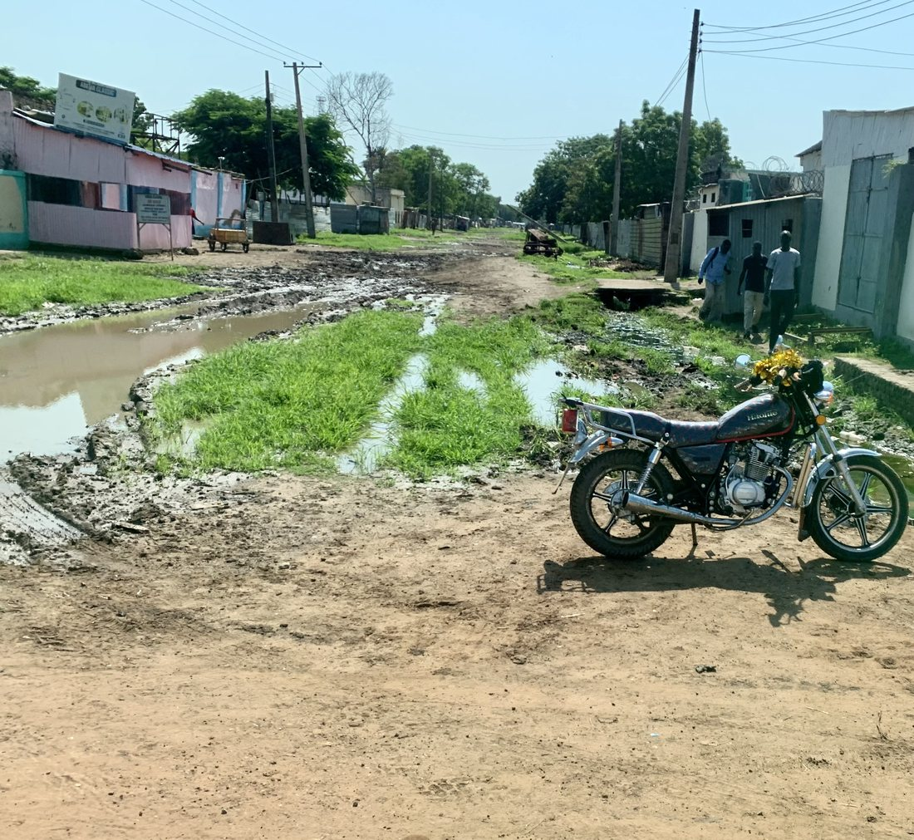
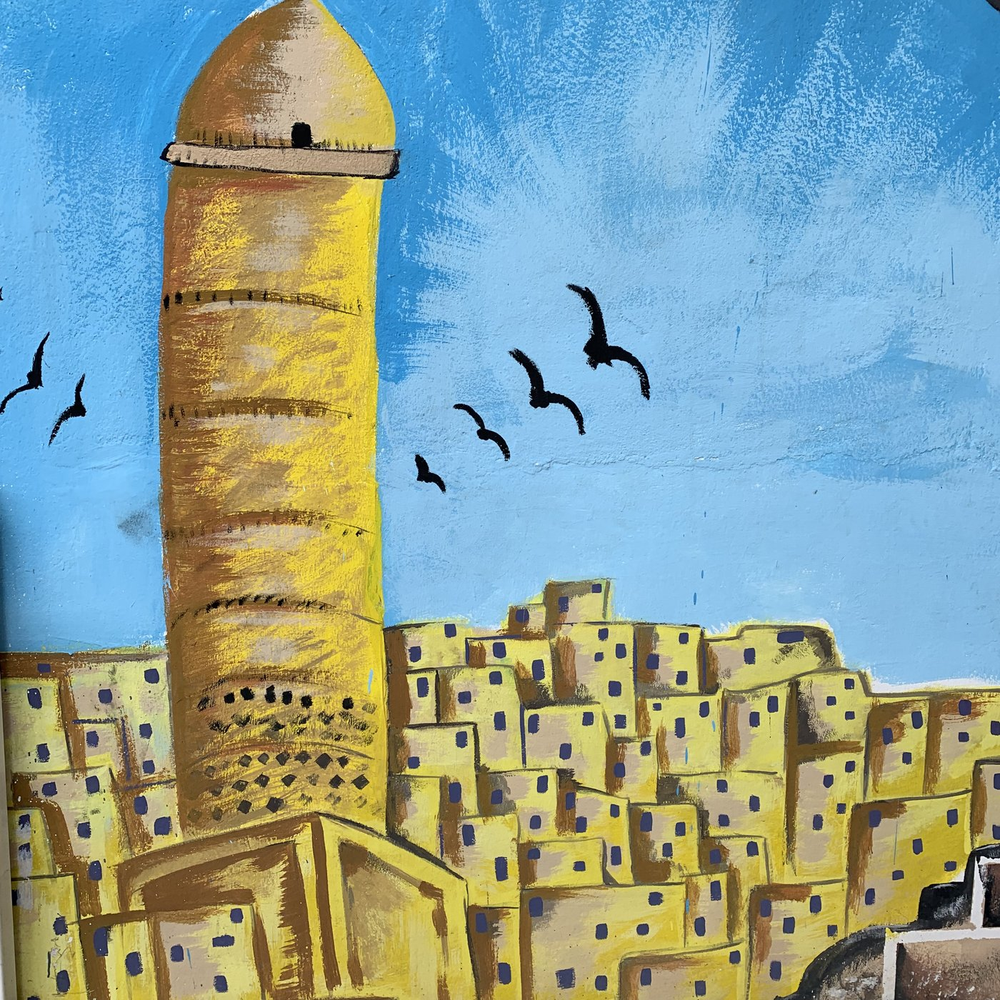

Photographs from field research on punishment, reintegration, humanitarian aid, and reconstruction in Iraq, Syria, and South Sudan. Back to Research Areas.
Punishment and reintegration in Iraq
Fieldwork behind Retribution or Reconciliation? and No Peace Without Punishment?, both with Kristen Kao, and the United Nations University Limits of Punishment project.

A prison block below the mountains, Sulaymaniyah governorate, northern Iraq (Revkin 2017)

Children’s drawings in a displacement camp east of Mosul, Iraq (Revkin 2017)

A child’s drawing of life under the Islamic State, captioned “ISIS and terrorism” (داعش ويا الارهاب), near Mosul (Revkin 2017)
Humanitarian aid and reconstruction
Fieldwork for the Duke–IOM Fragility Index in South Sudan, and reconstruction in Mosul.

Conducting a focus group in Malakal, South Sudan (Revkin 2024)

Seasonal flooding in Malakal, one of the environmental measures in the Fragility Index (Revkin 2024)

Al-Hol “closed camp” in northeast Syria (Revkin 2022)

A mural of the Al-Hadba minaret above the Old City, Mosul (Revkin 2019)
All photographs by Mara Revkin. Dates and locations are taken from the original image metadata.